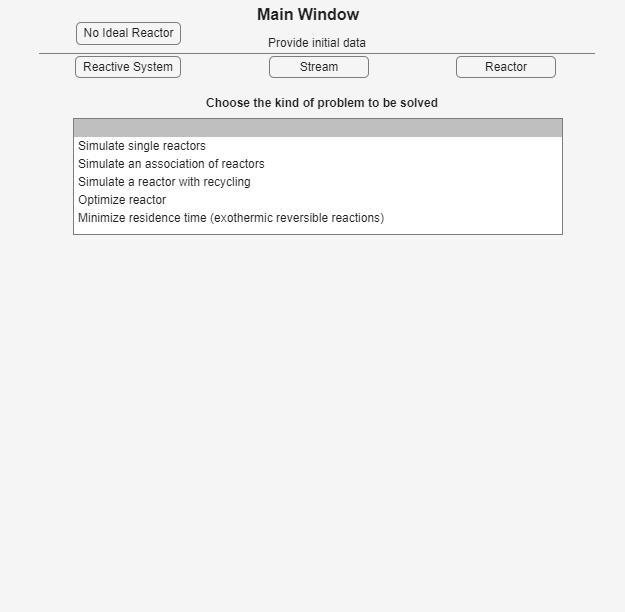

Main window
Learn about problem choices and preparation order.
Open guideUse these short, illustrated topics to prepare inputs, choose a problem, run a single reactor or an association, and interpret the result.

Learn about problem choices and preparation order.
Open guideLearn about stoichiometry, kinetics, and thermodynamics.
Open guideLearn about direct entry and optional import.
Open guideLearn about single reactors and associations.
Open guideLearn about sizing, cost, and reaction paths.
Open guideLearn about utility selection and unit conversion.
Open guideLearn about a checked first-order CSTR.
Open guide